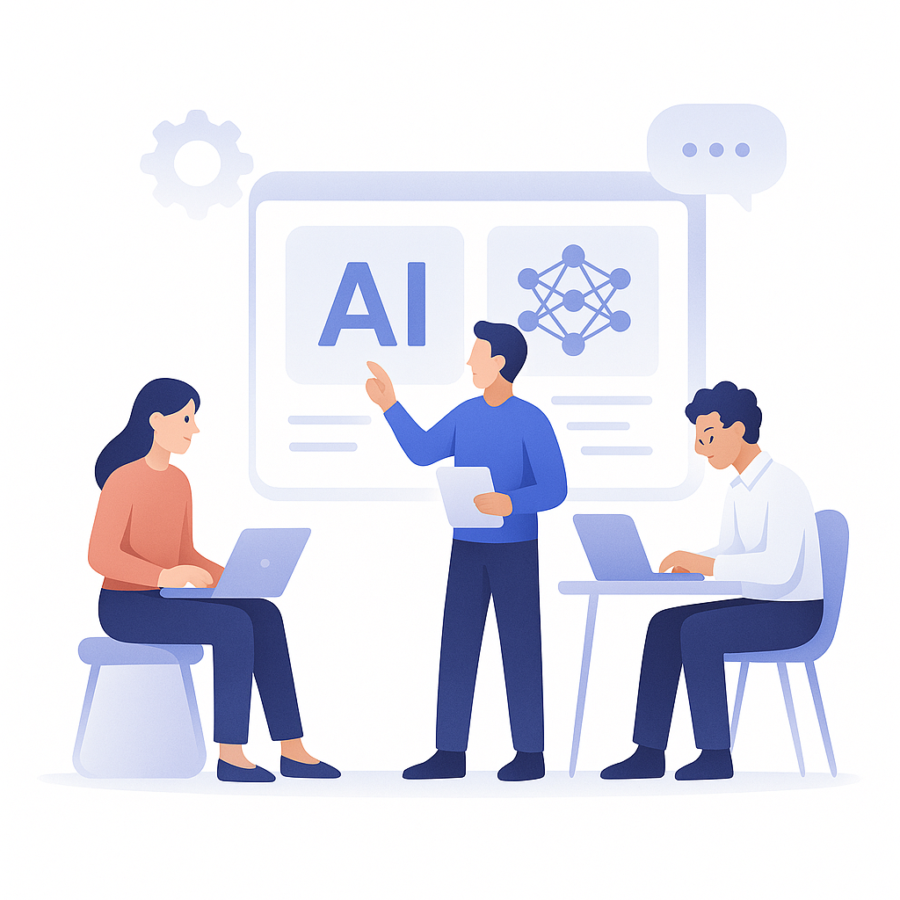

FE
Frontend Builder
Shapes the multi-page interface, validation flows, and navigation consistency.
CIH is designed as a modular project where each layer has a clear responsibility: the frontend handles the experience, the backend orchestrates processing, and MongoDB Atlas stores the working history.
Instead of forcing users to juggle separate tools for scraping, reading, note-taking, and playback, the project pulls those actions into one focused workflow.

| Layer | Technology | Purpose |
|---|---|---|
| Frontend | HTML, CSS, Vanilla JavaScript | Responsive multi-page interface with validation and shared navigation |
| Dashboard | React via CDN | Richer stats and activity views without a build step |
| Backend | Node.js + Express | Routing, authentication, scraping, summarization, and TTS orchestration |
| Database | MongoDB Atlas | Cloud persistence for users, content, metadata, and saved audio links |
| AI + Audio | Gemini API + edge-tts-universal | Summary generation and chunked text-to-speech streaming |
Shapes the multi-page interface, validation flows, and navigation consistency.
Owns controllers, routes, auth, scraping logic, and audio orchestration.
Connects MongoDB, Cloudinary, and content metadata for durable saved sessions.